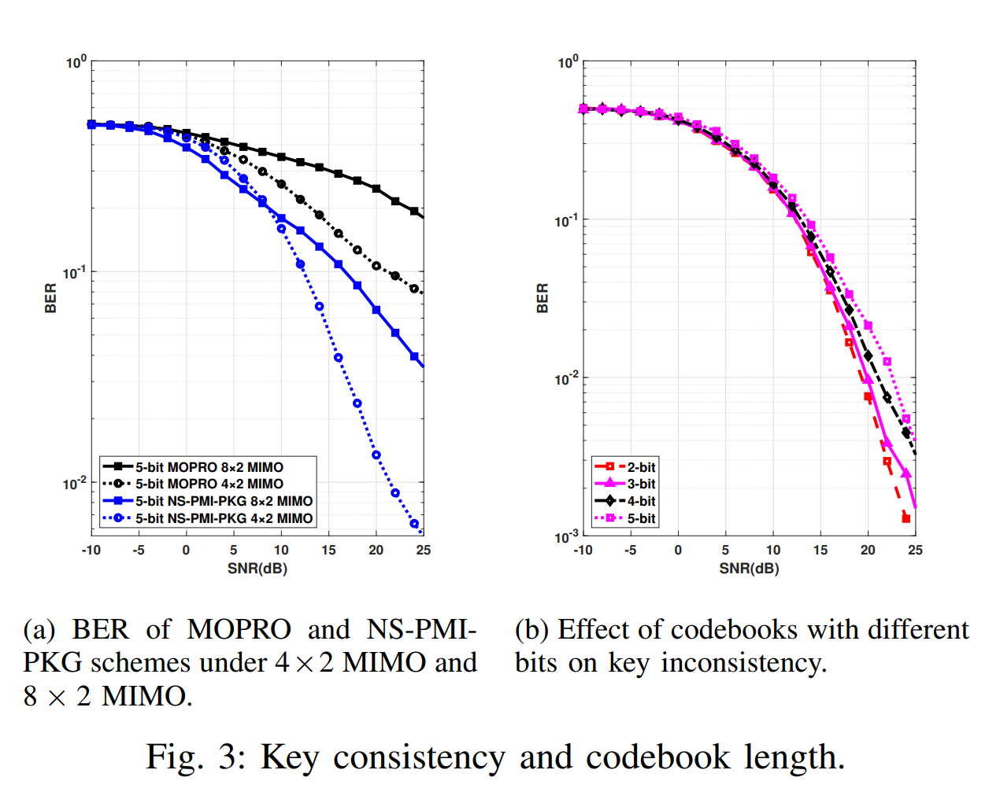

|
 |
传统的基于物理层的密钥生成（PKG）方案，窃听者和合法用户之间存在的空间相关性，可能导致窃听者能够重建信道并获得密钥。 基于PMI的PKG方案可以挫败窃听攻击。而现有基于PMI的方案没有考虑信道矩阵为非方阵的情况 在信道矩阵非方阵的情况下，码本检测的准确性和密钥的一致性有待提高。
提出适用于非方阵的NS-PMI-PKG方案
引入了一种编码本生成方法。通过使用预编码矩阵的奇异向量，该方法可以确保生成一个幺正的预编码矩阵，不考虑信道矩阵的形状。
-
提出了一种编码本检测方法。利用酉阵的特性和模板匹配的思想，定义距离指标来衡量码本检测结果的差异，提高码本检测的准确性，从而有效地密钥一致性。
仿真结果
密钥一致性分析的结果显示，当信道矩阵为非方阵时，NS-PMI-PKG方案的表现优于MOPRO方案，使其更适用于一般情况。
-
随着码本比特长度的减小，密钥一致性得到了提高。然而，这也导致了获得的密钥数量减少，从而限制了密钥生成速率(KGR)。